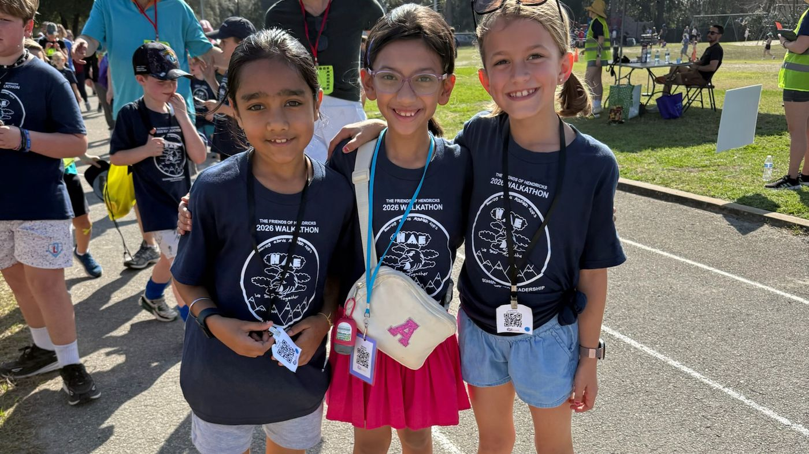
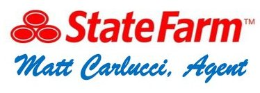
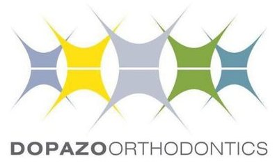
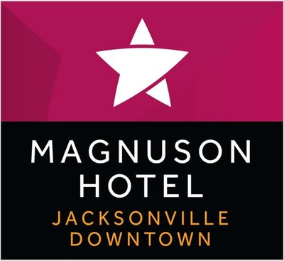
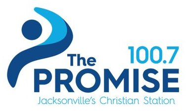
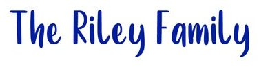

Hendricks Avenue Elementary · Jacksonville
It is six hundred families, forty-eight local businesses, and a budget the school district never provided. We raise what the Duval County School Board budget does not cover — and all of it stays inside one building.
Scroll
students and their families
the goal for the 2027 Walkathon
local businesses behind us in 2025–2026
launching leaders since
Our Mission
The Friends of Hendricks is a volunteer group of parents that raises funds for resources and projects the Duval County School Board budget does not cover.
In the past, we have funded capital projects, playground equipment, educational software, teacher grants, and classroom supplies.
Where it goes
All gifts, no matter how large or small, had a meaningful impact because YOU became invested in the education and enrichment of every child, faculty, and staff member.

Every shirt is designed by a Hendricks student.
2026 Walkathon · last year's shirt by Claire
Take part
Sat, Feb 20, 2027
The 15th one, and the biggest day of our year. Students collect pledges, then walk. Family and friends sponsor them online through Zeffy.
Pledge
Any time
Online through Zeffy, in a minute. 501(c)(3), Tax ID 20-4931978 — ask your employer to match it.
Any amount
All year
Your logo on 650+ t-shirts, the school marquee and both entrances. Five levels.
From $250
Grades K–5
A before-school Birthday Bash, a treat from Henry, and a classroom book dedicated in your child's honor.
$25
24 hours
Hendricks Avenue or San Jose Boulevard. Wish a student luck, celebrate a birthday, thank a teacher, and more.
$35–60
Learn more
Eat out on the night and a share of the bill comes straight back to school.
Free
2025–26 partners

Visionary partner · one only

Dopazo Orthodontics
Superior Fence & Rail

Magnuson Hotel Jacksonville Downtown

The Promise 100.7

The Riley Family
Give online through Zeffy. We are a 501(c)(3) — Tax ID 20-4931978 — so your employer may match it.
Total raised to date — needs the real figure